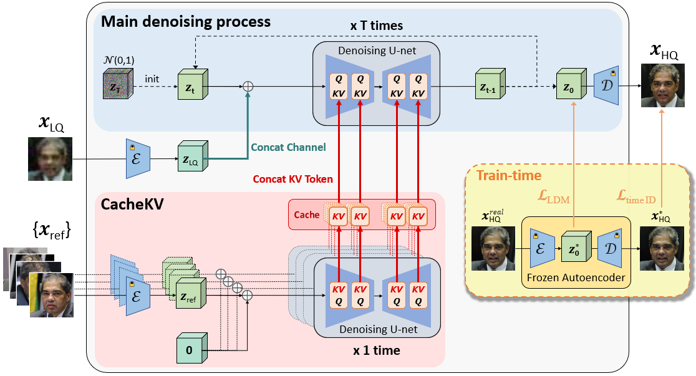
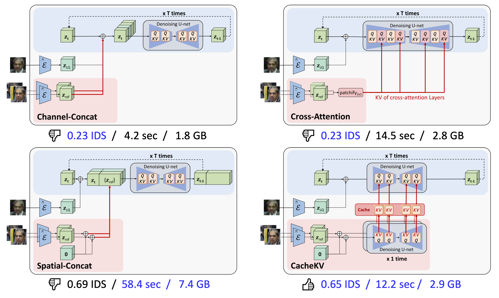
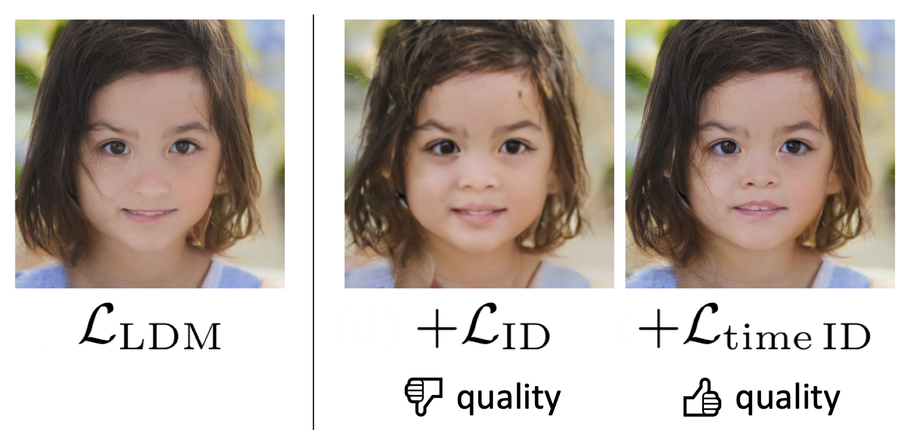
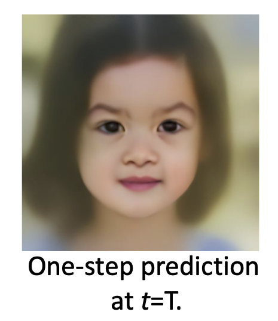
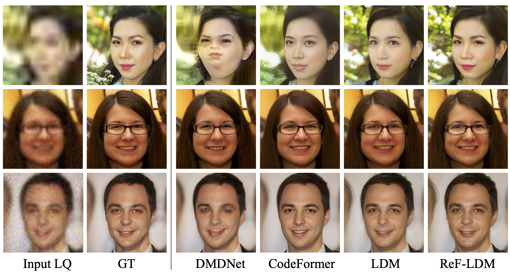

🔥Key highlights include:
We first extract and cache the key and value tokens of the reference images just once. These cached KV tokens can then be utlized repeatedly in each of the T timesteps of the main denoising process.
We also experimented with other designs for integrating the reference images. However, they are either ineffective (channel-concatenation, cross-attention) or inefficient (spatial-concatenation).
We found that training with identity loss degrades the image quality of the diffusion model. The reason may be that the one-step model prediction from a large timestep is out-of-distrubution for the pretrained ArcFace model. Our solution is simple and effective: downscaling the identity loss when a larger timestep is sampled for training.
 Our ReF-LDM achieves great identity similarity by successfully leveraging the reference images.
@inproceedings{hsiao2024refldm,
title={ReF-LDM: A Latent Diffusion Model for Reference-based Face Image Restoration},
author={Chi-Wei Hsiao and Yu-Lun Liu and Cheng-Kun Yang and Sheng-Po Kuo and Yucheun Kevin Jou and Chia-Ping Chen},
journal={Advances in Neural Information Processing Systems},
year={2024}
}